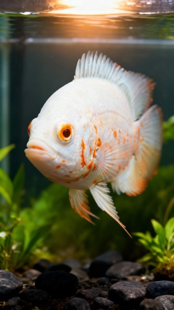

Plano 1 0,0-4,5 s · Plano detalle
Qué se ve El óscar albino cobre muestra sus manchas cobrizas y brilla bajo la luz directa
Movimiento el pez gira hacia cámara
Voz / subtítulo El pez que me guardé demasiado tiempo
Prompt de video
Vertical 9:16, close-up shot, Sony FX3 with 85mm macro lens, cinematic warm lighting illuminating from above, the fish turns smoothly towards the camera displaying its bright pearl-white body with vibrant orange and copper spots, crystal clear water, natural aquarium background. Keep constant: Albino oscar cichlid with pearl-white body, bright orange eyes, and copper-orange spots on flanks and fins; lush planted aquarium with dark stones; crystal clear water. Strictly avoid: deformed hands, extra fingers, plastic faces, chromatic aberration, artificial zoom-pan of a static photo, unrequested camera cuts, AI-generated text or logos, extra fins, morphing body, human hands, human presence.